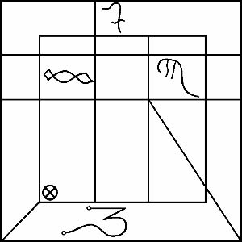

Ve bu da elimde tuttuğum muskaydı ve şu kelimeleri yazdıktan sonra onu her gün boynumda taşıdım:

Üç oyma sembolden, ilki yıldızların ötesinden gelen ırkımızın işaretidir ve bana bunu öğreten yaşlıların casusu Katib’in dilinde ARRA olarak bilinir. En eski Babil şehrinin dilinde ise UR’dur. Yaşlı Tanrıların Aktinin Mührü’dür ve bunu gördüklerinde bunu bize veren onlar, bizi unutmayacaklardır. Yemin ettiler!
Gökyüzünün Ruhu, Hatırla!
İkincisi eski işarettir ve Yaşlı Tanrıların güçlerinin çağrılabileceği yerlerde, uygun kelimeler ve şekillerle birlikte kullanıldığında Anahtar’dır. Bir ismi vardır ve AGGA olarak adlandırılır.
Üçüncü işaret, Gözcünün Mührü’dür. BANDAR denir. Gözcü, Yaşlılar tarafından gönderilen bir ırktır. Biri uyurken o nöbet tutar, uygun ritüel ve kurbanlarla icra edilmelidir: bunun dışında, çağrılırsa, kendi üzerinize döner.
Bu mühürler, etkili olmaları için, taşın üzerine oyulmalı ve toprağın üzerine yerleştirilmelidir. Ya da, kurbanlığın sunağı üzerine yerleştirilmelidir. Ya da, Büyülü Söz Kayası’nın yanına taşınmalıdır. Ya da, birinin Tanrısı ya da Tanrıçası’nın madeni üzerine oyulmalı ve boyna asılmalıdır, ancak dinsizin gözünden saklanmalıdır. Üçü içinde ARRA ve AGGA ayrı olarak kullanılabilir, yani yalnız ve tek başına. Buna karşın BANDAR, asla yalnız değil, biri ya da her ikisi ile birlikte kullanılmalıdır, çünkü Gözcü’ye, Yaşlı Tanrılarla ve ırkımızla birlikte ant içtiği aktinin hatırlatılması gereklidir, böyle olmazsa döner size gelir ve sizi öldürür ve insanlarınızın gözyaşları ve kadınlarınızın feryatları ile Yaşlı Tanrılar’dan imdat gelene kadar kasabanızı tahrip eder.
KAKAMMU!
Ateşin küllerinden kurtardığım ve ay ışığını yakalayan madeni muska dışarıdan kapısına her ne gelirse ona karşı kuvvetli bir mühürdür çünkü, onu görünce, geriye çekilirler
YALNIZCA AYIN IŞIĞINI KENDİ YÜZEYİNDE YAKALADIĞINDA
Çünkü, ayın karanlık günlerinde, ya da ay bulutların içindeyken, bariyerleri kırarak ya da dünya üzerindeki hizmetkarları tarafından girmelerine izin verilen Kadim ülkelerin hayaletlerine karşı çok ufak bir korunma olabilir. Böyle bir durumda, ayın ışığı dünya üzerinde parıldayana kadar hiçbir şekilde yardım dilenmemesi gerekir, çünkü ay Zonei içinde en yaşlı olanı ve Paktımızın yıldızlı sembolüdür. NANNA, Tanrıların Babası, Hatırla!
Bu yüzden, muska tamamıyla ay ışığı altında saf gümüşün üzerine oyulmalıdır ki işlemeye başladığında ay onun üzerinde parlasın ve ay büyülerinin özü ve bu Kitapta reçete edilen ritüeller burada verildikleri haliyle uygulanmalıdır. Ve muska asla Güneş ışığına maruz bırakılmamalıdır, çünkü UDU adı verilen SHAMMASH, kıskançlık içinde, onun gücünün mührünü çalacaktır. Böyle bir durumda, kafuru suyuyla yıkanması ve büyülü sözlerin ve ritüellerin bir kez daha uygulanması gerekir. Ancak, çoğunlukla, başka bir tane yapmak daha iyidir.
Hayatımın azabı içinde size verdiğim bu sırlar asla dinsizlere ya da bertaraf edilmişlere ya da Kadim Yılan’a tapanlara ifşa edilmek için değil, kendi yüreğinde saklaman ve bu şeyler üzerine daima sessiz olman içindir.
Huzur üzerinize olsun!
MASSHU Dağlarındaki o kader gecesinden bu yana, bana verilmiş olan gizli bilginin arayışında kırsal bölgelerde dolaştım. Ve bu geçirdiğim zaman, hiçbir karı edinemediğim, hiçbir evi ya da köyü yuvam diye adlandıramadığım ve tüccarlarla pazarlık etmek ve onların havadislerini ve adetlerini öğrenmek için, herhangi bir yolcunun öğrenebildiği gibi üç beş dil öğrenerek, çeşitli ülkelerde, sıklıkla da mağara ve çöllerde barındığım acı dolu ve bir başına bir yolculuktu. Ancak benim asıl pazarlığım bu ülkelerde ikamet eden Güçlerin her biriyleydi. Ve bir zaman sonra, daha önce, belki de rüyalarım dışında hiçbir bilgim olmayan pek çok şeyi anlamaya başladım. Gençliğimdeki dostlarım beni bırakıp gitti, ben de onları. Ailemden ayrıldıktan yedi yıl sonra kendi kendilerine, kimsenin bana söyleyemediği sebeplerle öldüklerini öğrendim, içinde yaşadıkları topluluk garip bir salgının kurbanları olarak ölmüşlerdi.
Kasabadan kasabaya orada yaşayan insanların uygun gördüğü kadar yemekle beslenerek, çoğu kez taşlanarak ve hapsedilmekle tehdit edilerek bir dilenci gibi başıboş dolaştım durdum. Bazen, bazı alimleri samimi bir öğrenci olduğuma ikna ediyordum ve içinde, ölülerle konuşma, sihirbazlık, maji ve simya hakkında ayrıntılar verilen kadim kayıtları okumama izin veriyorlardı. İnsanların hastalanmasına, vebaya, körlüğe, deliliğe ve hatta ölüme yola açan büyüleri öğrendim. Varolan ve Kadimlerin eski efsanelerinde yer alan çok çeşitli demon ve kötü tanrı sınıflarını öğrendim. Böylelikle kendimi, “Kılıcı Kafatasını Yarar” denilen, görünüşü korku ve dehşet ve (bazılarına göre) son derece nadir görülen tabiatta ölümler saçan dişi-iblis LAMMASHTA’ya karşı silahlandırdım.
Zaman içinde, burada, Kara Dünyanın bu kitabında listelenen bütün demonların ve iblislerin, hayaletlerin ve canavarların isimlerini öğrendim. Astral Tanrıların güçlerini ve ihtiyaç duyulduğunda onları çağırmayı öğrendim. Aynı zamanda astral ruhların dışında ikamet eden, isimlerini burada yazamayacağım Kadimlerin Kadimlerinin, Kadim Günlerinin Kayıp Tapınağı’nın girişini koruyan korkutucu varlıkları da öğrendim.
Tepelerde ateş ve kılıçla, su ve hançerle ve MASSHU’nun belirli yerlerinde yetişen, onunla, farkında olmadan kayanın önünde ateşimi yaktığım, akla, muazzam cennetlerde, aynı zamanda cehennemlerde yolculuk etmesi için büyük bir güç veren şu garip bitkinin yardımı ile tapındığım yalnızlık törenlerimde, Rahibin, Bilgeliğin arayışında yolculuk edebileceği küreler arasından güvenle geçmesini sağlayan ve onu takip eden muskaların ve tılsımların formülünü aldım.
Ancak şimdi, seyahatin Bin birinci ayından sonra, Maskim topuklarımı çimdiklemekte, Rabishu saçımı çekmekte, Lammashta dehşetli çenesini açmakta, AZAG-THOTH tahtında kin ve körlükle bakmakta, KUTULU kafasını kaldırıp batık Varloorni’nin peçesinin içine, Uçurumun içine bakmakta ve bakışını benim üzerime dikmekte, bu yüzden bunları aceleyle yazmalıyım, görünüşe göre bazı açılardan ritüellerin düzenine ya da formüllere ya da kurbanlara dair bir yanlışlık yaptım, çünkü yatarak bekleyen, rüyalar gören ERESHKIGAL’in güruhu, ayrılmamı dört gözle bekliyor. Tanrılara korunmam ve Kudüs’teki (Tanrılar onu hatırlasın ve ona merhamet etsin!) Rahip, ABDUL BEN-MARTU gibi yok olmamam için dua ediyorum. Kaderim artık yıldızlarda yazılı değil, çünkü Zonei’ler üzerinde iktidar ararken Kalde Akti’ni çiğnedim. Aya ayak bastım ve artık ayın benim üzerimde gücü yok. Hayatımın çizgileri tanrılar tarafından gökyüzüne yazılan harflerin üzerinde yaptığım ıssızlıklardaki başıboş dolaşmalarımda silindi. Ve şimdi bile kurtların, o kader gecesindeki gibi, dağlardaki ulumalarını duyabiliyorum ve benim ve diğerlerinin isimlerini çağırıyorlar. Etim için korkuyorum, ama ruhum için daha fazla.
Her boş anında, seni unutmamaları için Tanrıları çağır, çünkü onlar unutkan ve çok uzaktadır. Tepelerde, tapınakların ve piramitlerin üzerinde ateşlerini yak ki seni görebilsin ve hatırlayabilsinler.
Formüllerin her birini benim yazdığım gibi, bir satırını ya da noktasını bir kıl payı bile değiştirmeden kopyalamayı unutma, öyle yapmazsan değersizleşir ve daha da kötüsü: sınırdaki bir boşluk dışarıdakilerin girmesi için gerekli araçları sağlar, çünkü bozulmuş bir yıldızdır GANZIR’in kapısı, Ölümün kapısı, Gölgelerin ve Kabukların kapısı. Büyülü sözleri burada yazdığı şekliyle, reçete edildiği usulde ezberden oku. Ritüelleri yanlış yapmadan hazırla ve kurbanları uygun yerde ve zamanda sun.
Tanrılar sana merhamet etsin
MASKIM’in çenesinden kaçasın ve Kadimlerin gücünü yenesin!
VE TANRILAR SANA ÖLÜMÜ BAHŞETTİ
KADİMLER DÜNYAYI BİR KEZ DAHA YÖNETMEDEN ÖNCE!
KAKAMMU! SELAH!